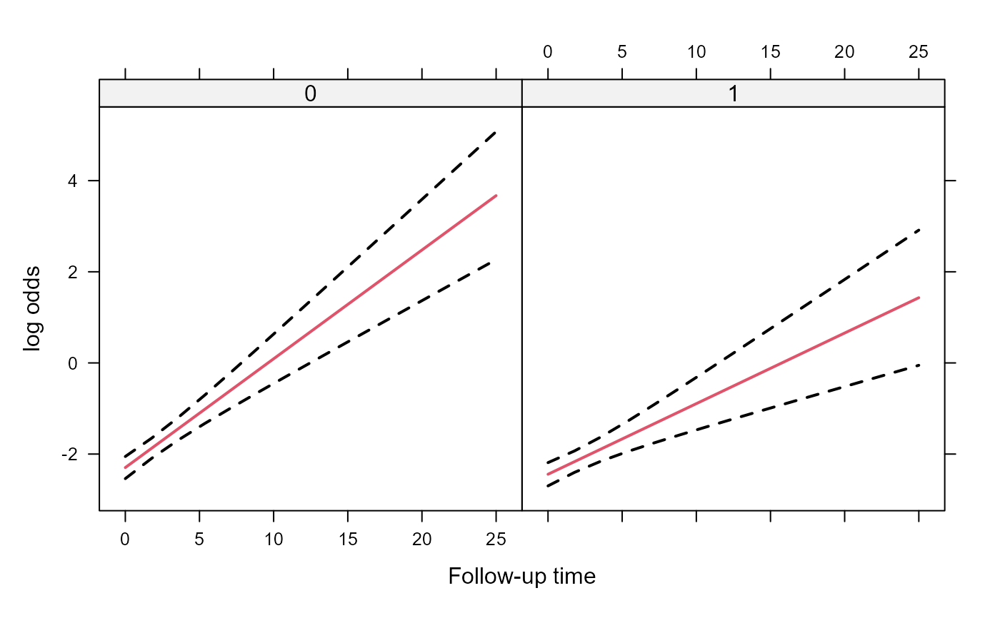
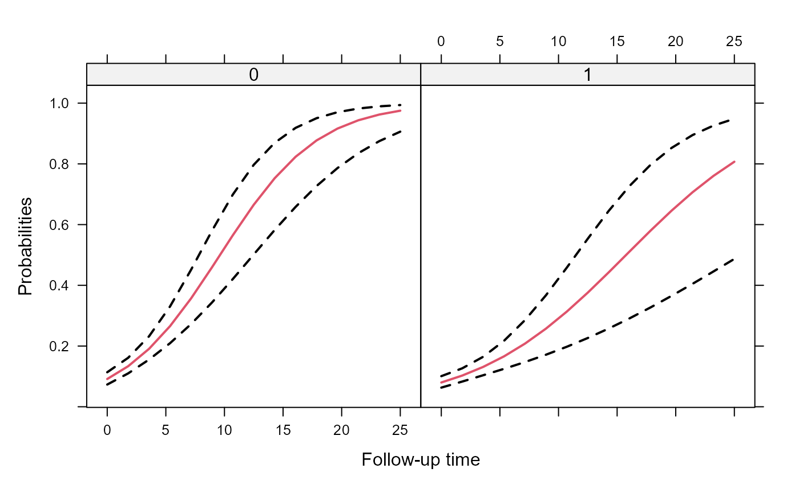

Predicted Values for Effects Plots
effectPlotData.RdCreates predicted values and their corresponding confidence interval for constructing an effects plot.
effectPlotData(object, newdata, level, …) # S3 method for MixMod effectPlotData(object, newdata, level = 0.95, marginal = FALSE, K = 200, seed = 1, sandwich = FALSE, …)
Arguments
| object | an object inheriting from class |
|---|---|
| newdata | a data frame base on which predictions will be calculated. |
| level | a numeric scalar denoting the level of the confidence interval. |
| marginal | logical; if |
| K | numeric scalar denoting the number of Monte Carlo samples from the approximate posterior of the parameters; applicable only for zero-inflated models. |
| seed | numerical scalar giving the seed to be used in the Monte Carlo scheme. |
| sandwich | logical; if |
| … | additional argument; currently none is used. |
Details
The confidence interval is calculated based on a normal approximation.
Value
The data frame newdata with extra columns pred, low and upp.
See also
Examples
# simulate some data set.seed(123L) n <- 500 K <- 15 t.max <- 25 betas <- c(-2.13, -0.25, 0.24, -0.05) D <- matrix(0, 2, 2) D[1:2, 1:2] <- c(0.48, -0.08, -0.08, 0.18) times <- c(replicate(n, c(0, sort(runif(K-1, 0, t.max))))) group <- sample(rep(0:1, each = n/2)) DF <- data.frame(year = times, group = factor(rep(group, each = K))) X <- model.matrix(~ group * year, data = DF) Z <- model.matrix(~ year, data = DF) b <- cbind(rnorm(n, sd = sqrt(D[1, 1])), rnorm(n, sd = sqrt(D[2, 2]))) id <- rep(1:n, each = K) eta.y <- as.vector(X %*% betas + rowSums(Z * b[id, ])) DF$y <- rbinom(n * K, 1, plogis(eta.y)) DF$id <- factor(id) ################################################ # Fit a model fm1 <- mixed_model(fixed = y ~ year * group, random = ~ year | id, data = DF, family = binomial()) # An effects plot for the mean subject (i.e., with random effects equal to 0) nDF <- with(DF, expand.grid(year = seq(min(year), max(year), length.out = 15), group = levels(group))) plot_data <- effectPlotData(fm1, nDF) require("lattice")#>xyplot(pred + low + upp ~ year | group, data = plot_data, type = "l", lty = c(1, 2, 2), col = c(2, 1, 1), lwd = 2, xlab = "Follow-up time", ylab = "log odds")expit <- function (x) exp(x) / (1 + exp(x)) xyplot(expit(pred) + expit(low) + expit(upp) ~ year | group, data = plot_data, type = "l", lty = c(1, 2, 2), col = c(2, 1, 1), lwd = 2, xlab = "Follow-up time", ylab = "Probabilities")# we put the two groups in the same panel my.panel.bands <- function(x, y, upper, lower, fill, col, subscripts, ..., font, fontface) { upper <- upper[subscripts] lower <- lower[subscripts] panel.polygon(c(x, rev(x)), c(upper, rev(lower)), col = fill, border = FALSE, ...) } xyplot(expit(pred) ~ year, group = group, data = plot_data, upper = expit(plot_data$upp), low = expit(plot_data$low), type = "l", col = c("blue", "red"), fill = c("#0000FF80", "#FF000080"), panel = function (x, y, ...) { panel.superpose(x, y, panel.groups = my.panel.bands, ...) panel.xyplot(x, y, lwd = 2, ...) }, xlab = "Follow-up time", ylab = "Probabilities")# An effects plots for the marginal probabilities plot_data_m <- effectPlotData(fm1, nDF, marginal = TRUE) expit <- function (x) exp(x) / (1 + exp(x)) xyplot(expit(pred) + expit(low) + expit(upp) ~ year | group, data = plot_data_m, type = "l", lty = c(1, 2, 2), col = c(2, 1, 1), lwd = 2, xlab = "Follow-up time", ylab = "Probabilities")